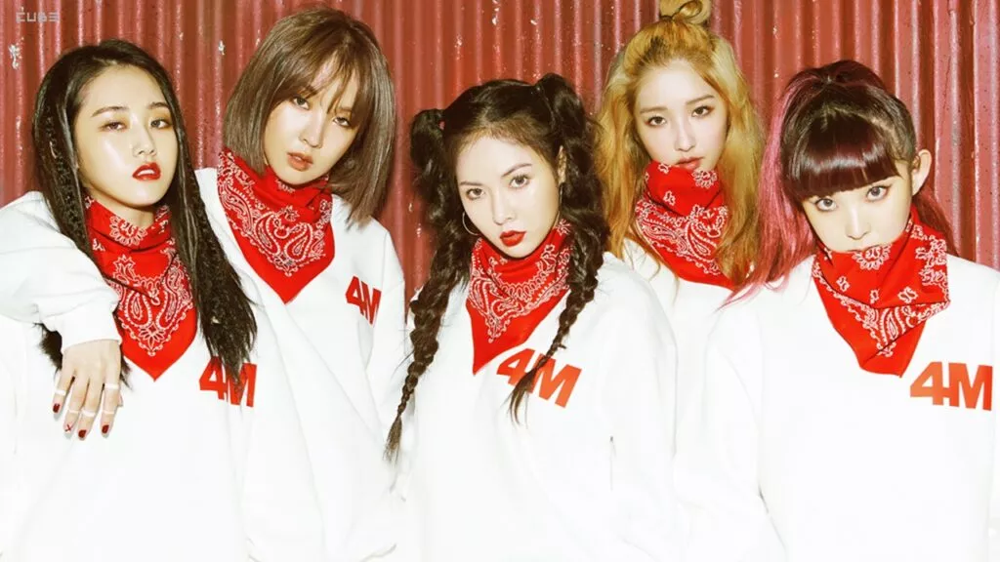

| Home | 1° geração | 2° geração | 3° geração | 4° geração | Extra:BTS |
|---|
Os maiores foram:
Esse incrível grupo deputou em 2005 e continua em atividade até hoje, já teve um número de 13 integrantes. Suas músicas mais populares são Sorry Sorry e Mamacita.
São considerados "Os reis do k-pop", estrearam em 2006 e, depois de passarem muito tempo em inatividade, prometem voltar com apenas 4 membros. Seu maior sucesso foi Bang Bang Bang.
Um dos grupos femininos mais importantes do k-pop! formado pela YG Entertainiment em 2009, lançaram músicas com I'm the best e Come back home.
Esses são os "príncipes do k-pop", seu debut foi em 2008. Eles são verdadeiros icones com trabalhos como Ring Dong Dong e View. Infelizmente, o grupo ficou parado por um tempo, por causa do suicídio de Kim Jong-hyun, porém voltarem ano passado com o comeback Don't call me.

Muitos k-poppers certamente conhecem a Hyun-A, pois bem, ela venho desse grupo. Elas consquistaram o cenário com o conceito girl crush. Possuem músicas como Crazy e Hate.
© Copyright Evy_Kelin